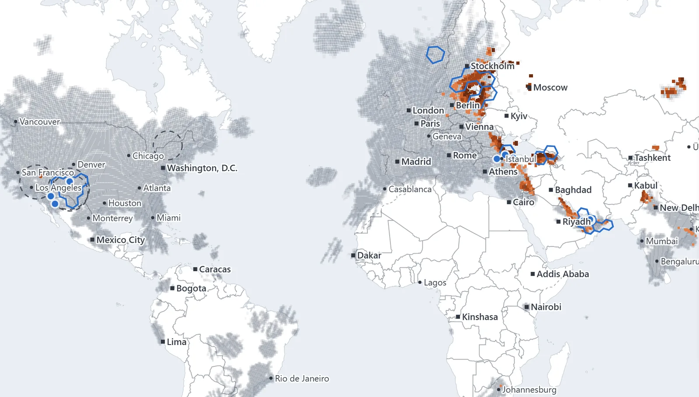
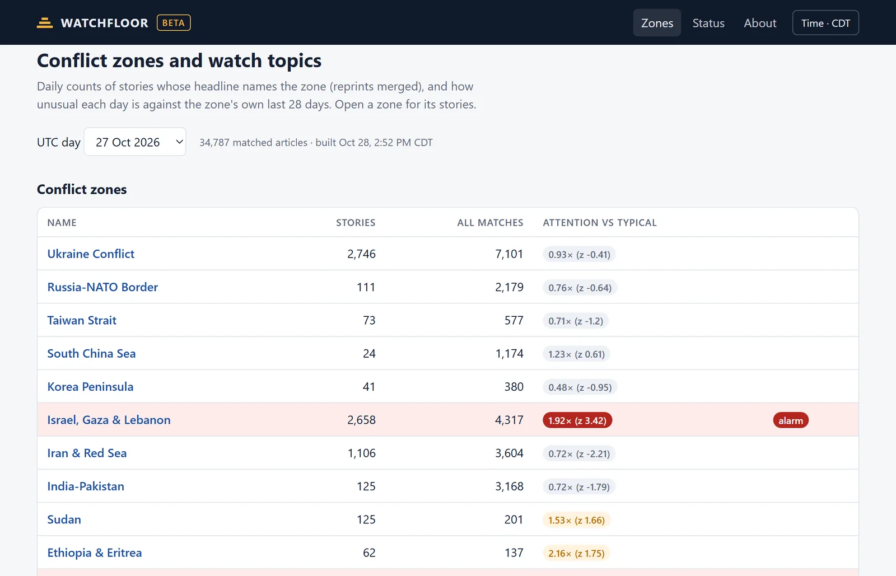

Open-source intelligence · Red River Valley
Open-source intelligence, built in the Red River Valley.
We build monitoring and analysis tools from publicly available information: warning on conflict, the contested radio spectrum, cyber threats, and forecasts that check themselves. Every product credits its sources, dates its claims and publishes its methods.
Products
Tools that show their sources and their working.
Noisefloor
Where the radio spectrum is contested: GNSS jamming and spoofing, and what it does to navigation and satellite links. Measures effects and states its evidence.
- A daily map of where aircraft lost GPS, every day since 1 October 2025
- Spoofing, satellite noise floor and radar-emitter layers
- Every object in the geostationary belt on a globe


Watchfloor
A daily warning picture for 15 conflict zones and 5 strategic topics, built from the world's news: what changed, and how each side is telling it.
Open Watchfloor →Every product
- NoisefloorWhere the radio spectrum is contested: GNSS jamming and spoofing, and its effects on navigation and satellite links.Live · Open →
- WatchfloorA daily warning picture for 15 conflict zones and 5 strategic topics, built from the world's news.Beta · Open →
- VigilCyber threat intelligence: ransomware, exploited vulnerabilities and threat indicators, with the history kept.Live · Open →
- CONTEXTHow the world's press is covering 15 conflict zones and 5 strategic topics, refreshed twice a day. Watchfloor's predecessor.Live · Open →
- PropertyCastA hyperlocal forecast for one property that verifies itself every hour against its own weather station, with a garden decision layer.Live · Open →
- Title 10 Field GuideWhat activated Air Guard members earn on federal orders, what gets missed, and what to do before and after release. Unofficial; compiled from public sources.Live · Open →
- Listening PostA job-search workspace: each opening scored against your own criteria, new postings found by a weekly sweep, and drafts you review and send yourself. Google sign-in, by invitation.Invite only · Open →
How we work
- 01
Publicly available information only
No classified or proprietary material, ever.
- 02
Every source credited
Each product lists its sources and their licences.
- 03
Methods in the open
How each measure works, and how well it has been checked.
- 04
Your clock
Times show in your own time zone; use the Time button to choose another, Zulu included, and a 12- or 24-hour clock.
About
Professional analytic standards, applied to public information.
The Intelligence Company is based in Fargo-Moorhead and run by Thomas Brummer: an intelligence professional with 25 years in the Air National Guard, an OSINT and space-domain-awareness analyst, and a former USAF weather forecaster.
Sources credited and licensed, claims dated, uncertainty stated, and methods and validation published alongside the products.
Get in touch
Fargo-Moorhead · Central time